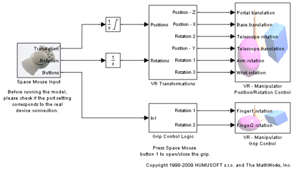
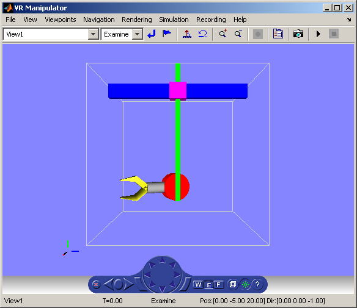

Manipulator with SpaceMouse
This example illustrates the use of Simulink® 3D Animation™ for virtual reality prototyping and testing the viability of designs before the implementation phase. Also, this example illustrates the use of the Magellan SpaceMouse for manipulating objects in a virtual world.

The VRML model represents a nuclear hot chamber manipulator. It is manipulated by a simple Simulink® model containing the SpaceMouse Input block. This model uses all 6 degrees of freedom of the SpaceMouse for manipulating the mechanic arm, and mouse button 1 to close the grip of manipulator jaws.
Magellan Space Mouse is an input device with 6 degrees of freedom. It is useful for navigating and manipulating objects in a virtual world. SpaceMouse is also suitable as a general input device for Simulink models. This professional 3-D device greatly facilitates all the above mentioned tasks, and we recommend you use it for higher performance applications and user comfort. SpaceMouse is supported through the SpaceMouse Input block which is included in the Simulink 3D Animation block library.
The Magellan SpaceMouse Input block can operate in three modes to cover the most typical use of such a device in 3-D context:
* Speeds * Positions * Viewpoint coordinates
Note: This demo requires the SpaceMouse or compatible device (SpaceMouse Plus, SpaceTraveller, PuckMan).
 